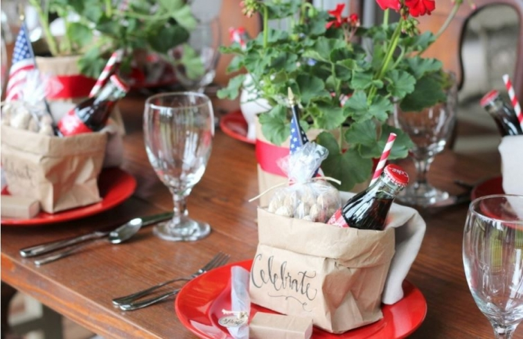
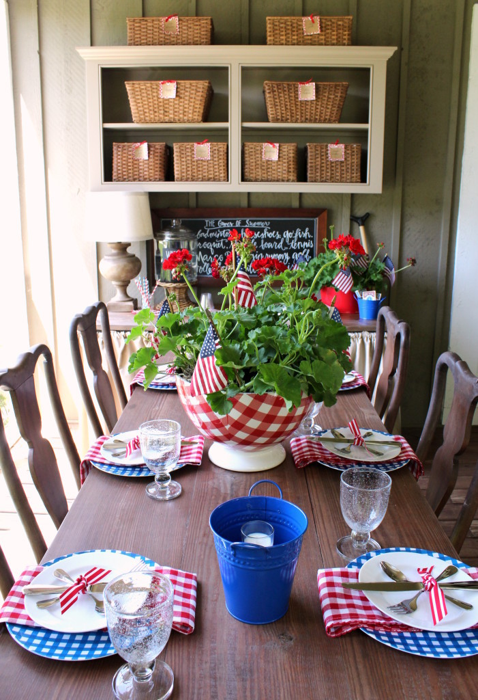
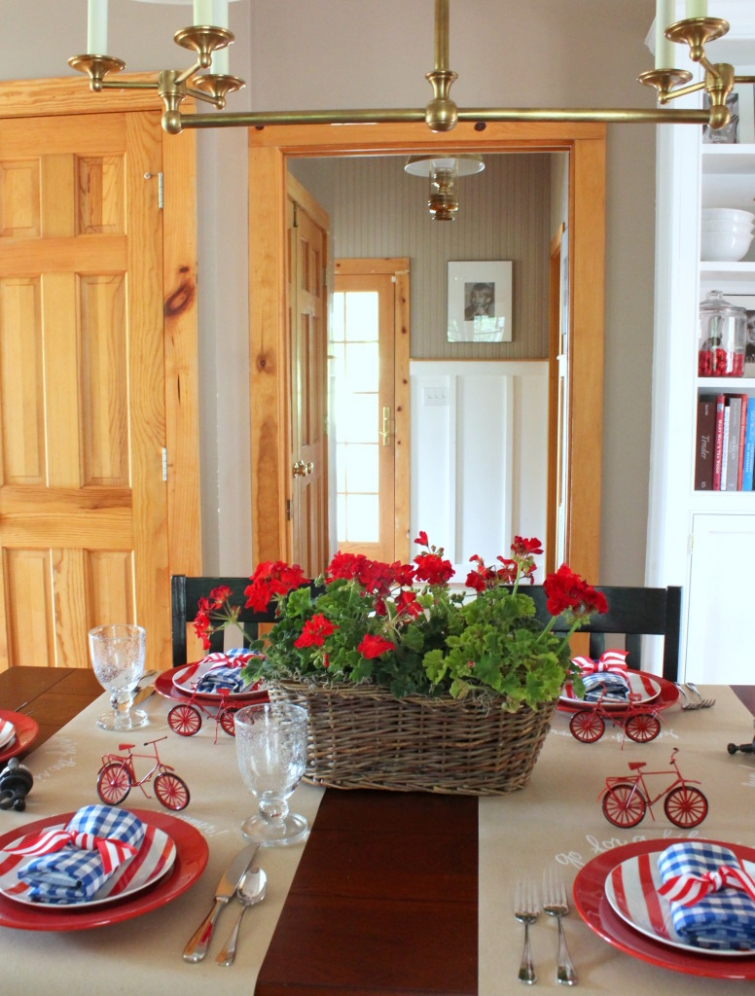

.png)
.PNG)
.PNG)
.PNG)
.PNG)
.PNG)
.JPG)
.JPG)
.PNG)
.PNG)



Hi Folks! Have you started getting things ready for this holiday weekend? With our house already dressed in red, white, and blue, I think it will be pretty simple to be ready for the 4th here, but if you are looking for some inspiration, I have pulled together all of our past 4th of July tables and quite a few others for some holiday eye candy here today. 🙂
Our porch table is currently dressed in red, white, and blue gingham.

And the dining room has gingham napkins tied up with striped ribbon atop a striped plate

Last year’s dining room had an ice-cream theme going on with wooden ice-cream spoons for name tags…

and an assortment of ice cream supplies together for the centerpiece.
A couple of years ago, our porch table was set with red plates topped with sparklers, matches, and bags that held a Coke, straw, flag, peanuts, and a linen napkin. (DIY instructions for the bag here.)
Last year’s porch table had white plates, a red printed napkin, and a bucket that held items needed for a barbeque. (See the post here for more info.)
And now for some wonderful tables out in blogland. 🙂
Those same blue print Target napkins from above showed up atop plates and used as a runner on this 4th of July breakfast table. That red print is a pretty fabric hemmed up for a tablecloth.
Here is another breakfast table for the 4th. Aren’t those bright blue polka dot placemats so cheerful?!
I love them and those precious cupcake wrappers holding the muffins.
It seems that I am not alone in using buckets on my holiday table. Take a peek at these clever ideas.
Heidi used a navy star bucket as a vase for the flowers on her 4th of July table.
No buckets are here on this next one, but it has fans that are perfect for the table. 🙂
Martha uses wrapped sparklers for a holiday touch on her table. (And is it just me, or do those flowers remind you of fireworks?)
Last year’s Pottery Barn table had star plates with sparklers and patriotic matches.
Perhaps you just want to use your napkins as the decorative element for the table setting. Here are a few lovely ideas.
Bandannas work perfectly with an easy-to-make napkin ring. 🙂
The napkin rings here are striped ribbon and large buttons.
A napkin assortment dresses this table with its charming red and white buffalo check table cover.
sweetsomethingdesignblogspot.com
Isn’t this use of trivia cards so clever for the 4th?
Or maybe you want to go beyond the napkins, and think about using something on your guest’s chair. Kathryn Greeley tied on a flag towel as a gift for her guests.
Another pretty chair is at this party on Lake Oconee. The colors are more subtle. The whole event is gorgeous, so be sure to click on the link for this one. (The food is fabulous there as well! 🙂 )
Or maybe you are a fan of the “less is more” philosophy. How about white dishes, clear bottles, and a few flags? Classic simplicity.
If you are hosting a buffet style party…maybe a covered dish meal, you might like this set up.
You could even set up a station with patriotic supplies for decorating a bicycle for a 4th of July parade (or just for fun. 🙂 )
So whether your event is large…
or small…
I hope you have found some ideas here that you can use for your holiday entertaining. 🙂
And just to let you know, we have had NO internet for over 10 days now. 🙁 At first we thought it was caused by all the new electric line construction going on around our house, but it didn’t improve. So we called our provider. They checked and said the problem was on our end. My husband has tried to pinpoint the problem here but has had no luck. I told him this morning to just go buy new whatever it takes. A blogger cannot live without internet! (Can you tell I am frustrated??) So I am currently writing this in a local coffee shop- but I don’t think I can make this my permanent office! 🙂
Anyway, I wanted you to know why the posts have been so scarce the last 10 days. (And by the way, the tables here in the coffee shop are definitely not ready for the 4th. Perhaps I should tell them to read this post. LOL) Anyway, I hope you have fun getting ready for the 4th. We’d love to hear what you have planned, so please tell us about it in the comments.
Hope to be back soon!
(Fingers crossed here. 🙂 )


.PNG)
Such amazing red, white, and blue table inspiration here…including yours!…Happy 4th Kelly!
Hi, Kelly! Sorry to hear of the internet problems, I hope it gets fixed soon. Well, we’re having a good old fashioned American barbecue for the 4th, and we’re using the gingham Kroger plates. I decorated my hutch with my staple Emma Bridgewater set along with the red and blue gingham plates, PB red and blue star plates, a jar of red, white and blue paper straws, vase of American flags and a hand carved Uncle Sam (carved by a family member). We’re ready to celebrate our wonderful country this Saturday! Have a safe and FUN Independence Day!!!
Lots of inspiration here, I’m always learning new things from your blog! And now with a new computer I’m zipping right along!
You’re right the coffee shop needs to take a look at your blog post.
Hope all gets fixed quickly. I feel your frustration.
Kelly
This post is packed with holiday table inspiration. I shared it on my facebook page. Love the bandanas and those polka dot napkins!!
Fun Fun Fun glad you are back.
I have missed you and thought you must be on a trip! Sorry about your internet. (yes, you really need to help the coffee shop out. lol)
Happy 4th, Cindy
I noticed you had been missing. 😉 I thought maybe you were vacationing. 🙂 We had an internet problem a for over a year with it going out normally in the afternoon. It was bizarre. The repair man stayed here two hours and never could pinpoint the problem, so he “cleaned up” all the wires leading into the box outside and cut all the lines that were not connected to phones and it worked. I sure hope you get it fixed soon. Thanks for all the 4th of July inspiration!! 🙂
I was wondering about you! Thanks for sharing all of these wonderful ideas. Can’t wait to try some.
All the tables are so fun and colorful…but, yours are the best in my opinion! There’s just something about those red geraniums…and those checks! Hope you get your internet fixed quickly! 😉
Soo happy to see the notification of your post today!! I’ve missed you and you have spoiled us recently with all the goodies from your home and links to share. I was hoping everything was ok but just thought you were extra busy with moving and maybe you had gone to rest at the beach. Love all these ideas!! Been working on decorations but no special plans for the 4th but love red, white and blue for the entire summer and will be grilling and making a coke cake.
Yay! I am glad you are back! I thought maybe you had gone to the beach. All of the holiday tables are awesome! Thanks for sharing them and inspiring me once more. For years we hosted a gigantic July 4th party because the town fireworks were visible from our front yard. But, the fireworks stopped and so did our parties. This year the town is bringing back the fireworks from a different location and we are not sure we will be able to see them from home. We will have family for a cookout and homemade ice cream. Maybe I will dig out some of our old decorations.
———————————————————————–
Glad to be back! No beach trip here yet. How fun to be able to watch a fireworks display from your own yard. I’m sorry they stopped the big display, but I hope the new location will still allow you to see them. We can hear them from our house, but we cannot see them. 🙁 If you are having a family cookout, you better dig out your patriotic decorations, girl!
Kelly
Kelly,
And here I thought you had been swept off to Paris for a retirement vacation! 🙂 Computer issues are always so frustrating. I’m happy to know your husband is on the job. I’ll keep my fingers crossed that you are back in blogging business very soon. I love some of the ideas for tables for the 4th. I’ll definitely be borrowing a few ideas, most of them yours!
Happy 4th and have a relaxing weekend.
xo,
Karen
———————————————————————-
Ha ha Karen! No…no Paris trip here. Sorry to disappoint you. Keep those fingers crossed for our computer issues to be solved! Borrow any idea you see here for your 4th of July table. I am glad you saw some you liked!
Kelly
I was wondering where you were Kelly!! Glad you are back with so many cute ideas.
———————————————————————
I’ve been here, just unable to blog. (Not a good thing for a blogger!) Thank you for reading and commenting on the post Arlene. Have a happy 4th!
Kelly
Such a wonderful collection of ideas and inspirations! You’re turning the 4th of July into my new favorite holiday!
As for the lack of service, check for breakages under the house from chipmunks. A few years ago, some chewed through our lines.
———————————————————————
I’m happy you liked all the tables Ruth, and the 4th of July is a good one to be a favorite! 🙂 We will check under the house. A cat ran out from there last night (and we do not have a cat for a pet!) And I know there have been chipmunks under our deck.
Kelly
Kelly,
Sorry to hear about your internet. That is frustrating! I am glad that you set up office in a coffee shop. I really like all of your inspiration for the table settings for the 4th of July. It happens to my Dad’s birthday on the 4th so whole family will be at the lake house for the weekend. I am going to have to see if I can find some cute things to set the table with when I go buy lanterns for our daughter and nieces. Good luck with getting your internet back up and running.
——————————————————————-
Thank you Dawn. Happy birthday to your Dad! How cool to be born on the 4th of July. 🙂 I know you and your family will have a great time at the lake. How fun to spend the holiday there with all your family! I think we may have to discovered that the wireless router is the culprit of it all. Moving on to step 2. 🙂
Kelly
Ahhhh, modern technology. You are truly dedicated to your craft! Thanks for finding a way to get this out to all of us. And, yes, the coffee shop could use your touch! :-)Happy 4th!!!
——————————————————————–
Modern technology can often be no fun when it is not working. I had been wanting to get over to the coffee shop sooner, but we have been moving furniture to our daughter’s new apartment, and there just hasn’t been time – other than late at night when it was closed. Happy 4th to you too Patti!
Kelly
Yippee…a post. Taking a break between laundry and fun kitchen floor washing! Kelly…take me away….. I think I’d like to be sitting in that coffee shop right about now. 🙁 Thank you for so many inspiring links and going the extra mile with getting a post up. I will be checking out some of these links tonight….Love the fun buffet style dining and that quaint picnic table by the lake. Hope you have a good 4th and that internet problem gets solved. So frustrating. I go nuts when ours is a problem for just a day. 🙁
——————————————————————–
I have to do laundry and floor washing tomorrow, so I will be feeling your pain (and wishing I was back in the coffee shop!) I’m so glad I could give you a break in your chores today Debra. I hope you do get time this evening to explore some of the links.
Yes, computer problems are a pain because I know so little about fixing them!
Kelly
Great ideas for the 4th of July celebration! Thanks for going the extra mile to get this posted. Hope your internet gets fixed soon!
———————————————————————-
I’m glad you liked all the ideas Anne. It wasn’t too bad in the coffee shop today. A huge storm came up, and all of us were watching the rain blow sideways out the window. Major wind!
Kelly
So many fun ideas in one spot. Thanks Kelly! We are midconstruction on our lake home so no party for us there this year. We will go to our daughters and have a great time swimming and eating lots of red, white and blue food! I am going to pin this for next year! {my past tables have had buckets too, I guess great minds and all that:-) }
———————————————————————
Yes, do pin it for next year, Sue. I hope you will be enjoying a party for the 4th at your new lake home next year. Swimming and eating sound like fun things to do this year though. 🙂 And great minds do think alike!
Kelly
Your decor makes me happy!
———————————————————————-
I’m so glad Kathy. 🙂
Kelly